Guia do usuário do ShiftAlarm
Versão 14. Data: 2 de agosto de 2026.
1. Primeira inicialização
Quando o ShiftAlarm é iniciado pela primeira vez, ele exibe um breve fluxo de configuração. A tela principal já está disponível em segundo plano, mas é recomendável concluir primeiro a configuração básica.
- Leia as informações introdutórias e toque em “Continuar”.
- Na etapa dos documentos, abra-os ou aceite os documentos obrigatórios quando estiver pronto para prosseguir.
- Na etapa das permissões, abra a tela de permissões e verifique as notificações, os alarmes exatos, o acesso à localização e as restrições de bateria.
- Toque em “Concluir configuração”.
Você pode configurar as permissões mais tarde em “Configurações → Permissões e confiabilidade”.
2. Permissões e confiabilidade
Alarmes, lembretes e geoalarmes dependem das configurações do Android e do software do fabricante do dispositivo.
- Notificações — necessárias para alarmes, lembretes, temporizador e notificações dos serviços.
- Alarmes exatos — ajudam o alarme a tocar no horário definido.
- Localização — necessária para os geoalarmes.
- Localização em segundo plano — necessária para que um geoalarme funcione enquanto o aplicativo estiver fechado.
- Bateria e atividade em segundo plano — podem afetar a confiabilidade do acionamento em dispositivos Xiaomi/Redmi e em alguns outros aparelhos.
O Android nem sempre garante o envio imediato de notificações, alarmes exatos ou eventos de geocerca. Para alertas importantes, verifique todos os itens na tela de permissões.
3. Tela principal
A tela principal é o seu painel diário. Ela oferece acesso direto ao calendário, relógio, geoalarmes, alarmes comuns, escalas de turnos, notas e configurações.
3.1. Elementos da tela principal

- Seta para trás — move o calendário para o mês anterior.
- Mês e ano — mostra o mês aberto. Toque nessa área para usar o seletor passo a passo de mês e ano.
- Seta para a frente — move o calendário para o mês seguinte.
- Calendário — é a área principal do mês. Você pode deslizar o calendário. Cada dia pode mostrar a data, lembretes, eventos, turno programado e alterações do dia. Um toque normal seleciona uma data; um toque prolongado abre as informações e ações do dia selecionado.
- Hoje — retorna o calendário ao dia atual.
- Relógio — abre o relógio mundial, o cronômetro e o temporizador.
- Geoalarme — abre o mapa, os locais salvos e as configurações de geoalarmes. O alerta pode ser acionado ao entrar na área selecionada, ao sair dela ou em ambas as situações.
- Alarme — abre os alarmes comuns, repetitivos e vinculados a turnos.
- Escala — abre as escalas de turnos, sua criação e edição, e as estatísticas.
- Notas — abre notas, eventos, lembretes, notas de áudio e conversão de fala em texto.
- Configurações — abre permissões, idioma, tema, modelos de voz offline, backup, diagnóstico, documentos e treinamento.
3.2. Selecionar um mês e um ano
Toque no mês e no ano na parte superior da tela principal para abrir rapidamente o período desejado no calendário. A seleção ocorre em etapas: século → década → ano → mês.
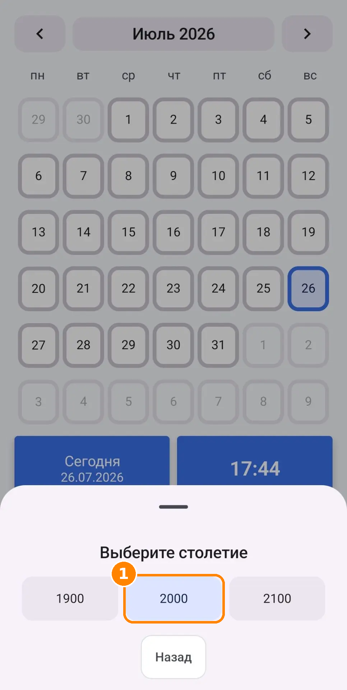
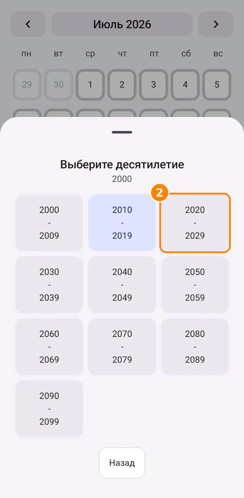
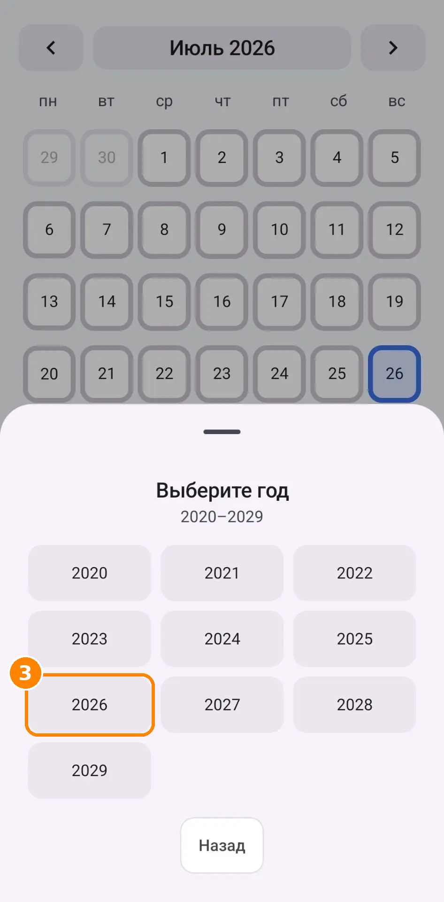
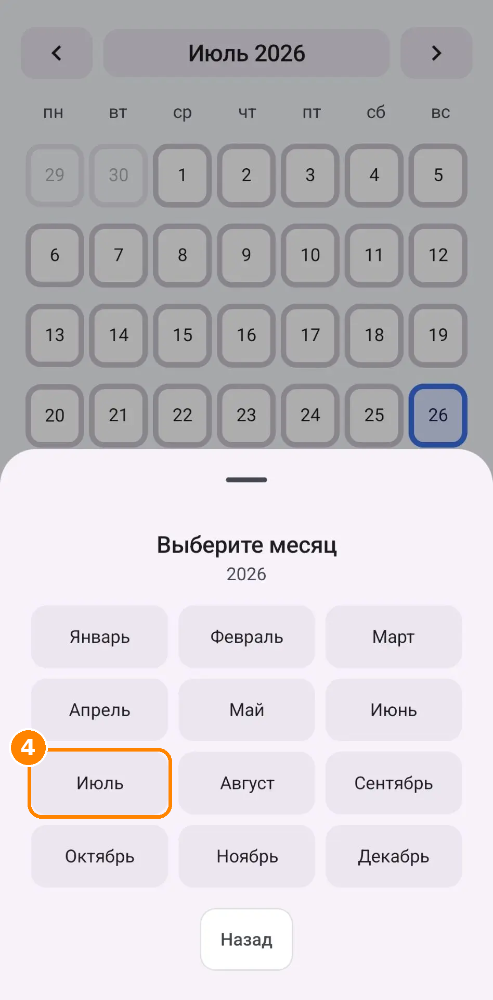
3.3. Informações e ações de um dia selecionado
Toque e segure o dia desejado no calendário. Um painel com informações e ações para essa data será aberto. Arraste o painel para cima para ver todas as ações disponíveis.
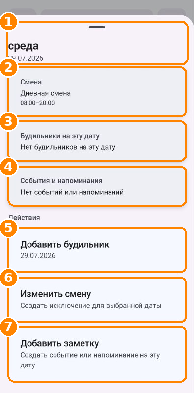
- Data — mostra o dia da semana e a data selecionada. Arraste a alça superior para cima ou para baixo para expandir ou fechar o painel.
- Turno — mostra o turno calculado ou uma alteração do dia, como folga, folga compensatória, férias, licença médica ou outra exceção.
- Alarmes para esta data — mostra os alarmes atribuídos ao dia selecionado ou informa que não há nenhum.
- Eventos e lembretes — mostra as entradas vinculadas à data selecionada.
- Adicionar alarme — abre a criação de um alarme único para a data selecionada.
- Alterar turno — cria uma exceção para um dia ou intervalo de datas na escala ativa.
- Adicionar nota — permite escolher um evento ou lembrete para criar na data selecionada.
Alterar um dia ou um intervalo de datas
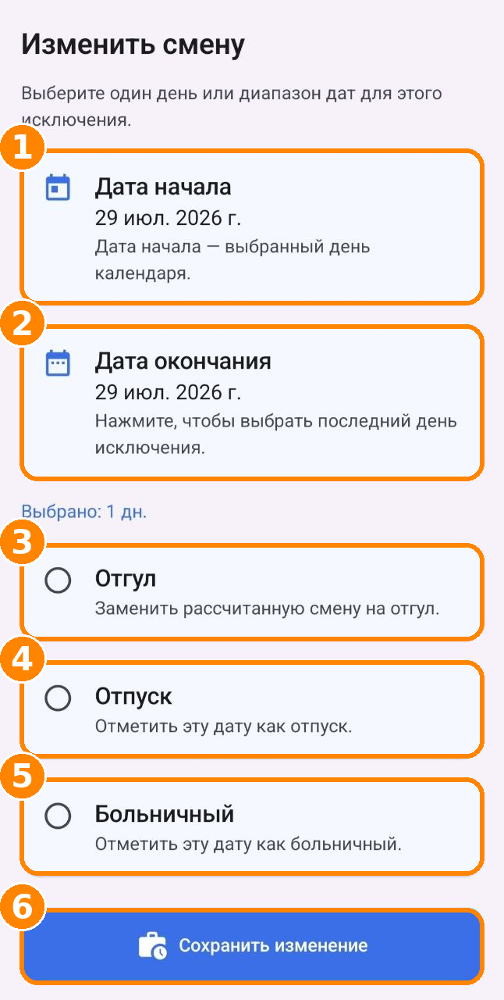
- Data inicial — é o primeiro dia da alteração. Inicialmente, usa a data selecionada no calendário.
- Data final — é o último dia da alteração. Para alterar somente um dia, mantenha a mesma data selecionada.
- Folga compensatória — substitui o turno calculado por uma folga compensatória.
- Férias — marca o dia ou intervalo selecionado como férias.
- Licença médica — marca o dia ou intervalo selecionado como licença médica.
- Salvar alteração — aplica ao calendário a exceção selecionada.
Ajustar o tempo de trabalho
Role a lista de tipos de alteração para baixo e selecione “Editar turno” para mudar a duração do turno de trabalho calculado.
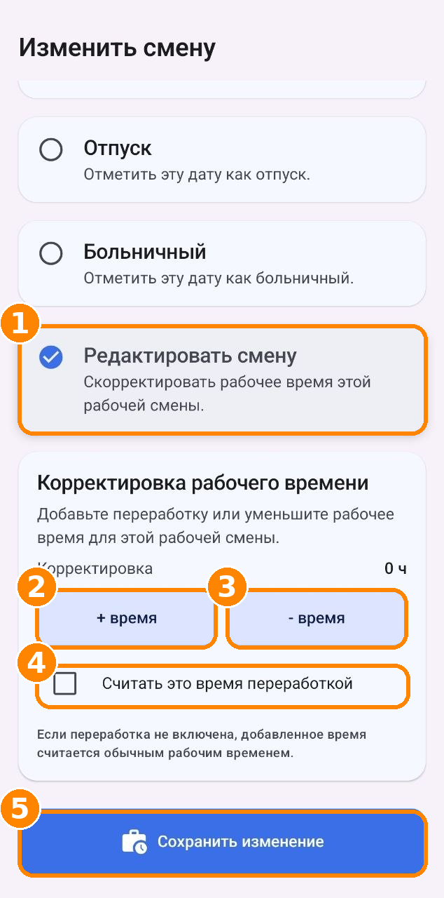
- Editar turno — permite ajustar o tempo de trabalho do turno selecionado.
- + tempo — adiciona horas ou minutos à duração padrão do turno.
- − tempo — reduz a duração do turno, por exemplo, quando o trabalho terminou mais cedo.
- Contar este tempo como hora extra — considera o tempo adicionado como hora extra. Se a opção estiver desativada, ele será contado como tempo de trabalho normal.
- Salvar alteração — aplica o ajuste ao dia ou intervalo selecionado.
4. Escalas de turnos
Uma escala de turnos define um ciclo de trabalho repetitivo e serve de base para outros recursos do ShiftAlarm. O aplicativo a utiliza para preencher o calendário, vincular alarmes a turnos, contar o tempo de trabalho, gerar estatísticas, estimar o salário e preparar relatórios.
4.1. Lista de escalas e controles
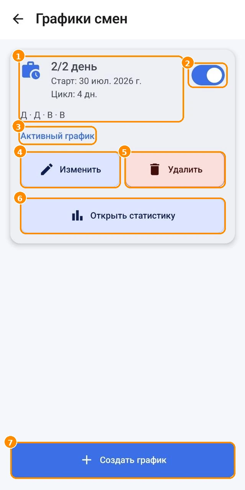
- Detalhes da escala — mostram o nome, a data inicial, a duração do ciclo e uma sequência curta de dias. No exemplo, a sequência representa dois turnos diurnos seguidos de duas folgas.
- Interruptor — desativa temporariamente a escala sem excluí-la. Quando você a ativa novamente, as configurações salvas continuam sendo aplicadas.
- Status da escala — indica qual escala está ativa no momento.
- Editar — abre os parâmetros que podem ser alterados. Após a configuração inicial, parte da base da escala é bloqueada para evitar um recálculo acidental de dados do calendário que já foram criados.
- Excluir — exclui a escala após a confirmação. Antes de excluí-la, verifique os alarmes vinculados a turnos e os cálculos.
- Abrir estatísticas — abre as estatísticas de tempo de trabalho, período, salário e relatórios desta escala.
- Criar escala — permite selecionar um modelo pronto ou criar um ciclo personalizado.
4.2. Iniciar a criação de uma escala
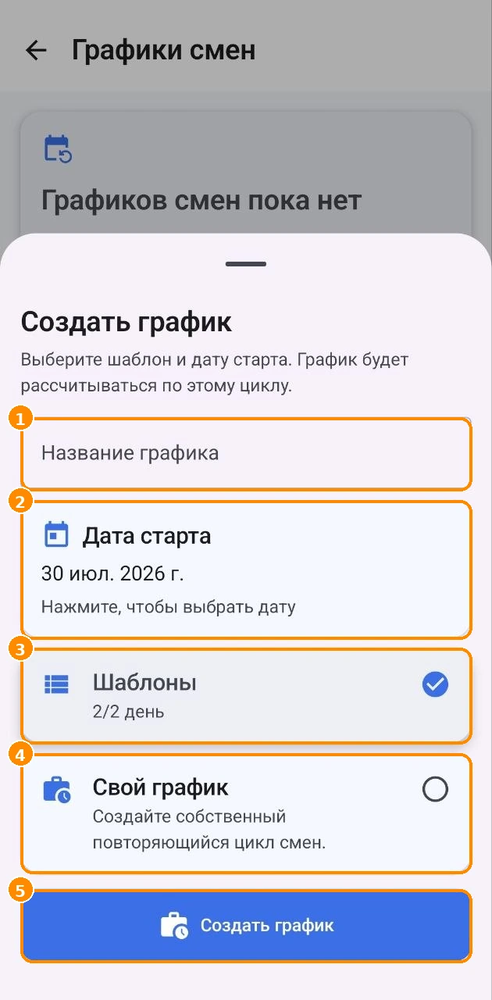
- Nome da escala — insira um nome claro, como “Principal 2/2”, “Turno noturno” ou o nome do seu local de trabalho.
- Data inicial — é a data que corresponde ao primeiro dia do ciclo repetitivo. Você pode selecionar uma data passada ou futura; o aplicativo calcula a escala para a frente e para trás a partir dela.
- Modelos — sequências comuns de turnos já prontas. O exemplo usa o modelo “2/2 diurno”.
- Escala personalizada — cria sua própria sequência de dias de trabalho e folgas.
- Criar escala — abre o editor detalhado da opção selecionada.
4.3. Criar uma escala a partir de um modelo
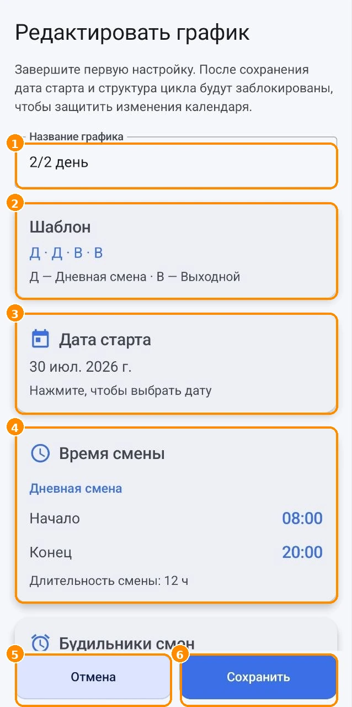
- Nome da escala — mantenha o nome sugerido ou substitua-o por um nome próprio.
- Modelo — mostra a sequência de letras e seu significado. No exemplo, a sequência significa turno diurno, turno diurno, folga e folga.
- Data inicial — selecione a data do primeiro dia da sequência exibida.
- Horário do turno — informe os horários de início e término de cada tipo de turno de trabalho. O aplicativo exibe a duração calculada.
- Cancelar — fecha o editor sem salvar.
- Salvar — salva a escala e inicia o cálculo dos turnos no calendário.
4.4. Criar um ciclo personalizado
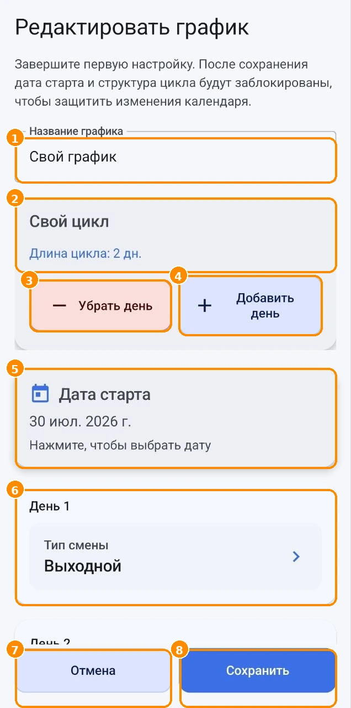
- Nome da escala — dê um nome à sua sequência personalizada.
- Duração do ciclo — mostra quantos dias fazem parte da sequência repetitiva.
- Remover dia — reduz o ciclo em um dia.
- Adicionar dia — adiciona outro dia configurável ao fim do ciclo.
- Data inicial — é a data que corresponde ao dia 1 do ciclo personalizado.
- Configurações do dia — toque no cartão “Tipo de turno” e selecione uma folga ou o tipo de trabalho desejado: turno diurno, noturno, matutino, vespertino, de 24 horas ou personalizado. Para um dia de trabalho, informe os horários de início e término. Configure da mesma forma os demais dias do ciclo, mais abaixo na tela.
- Cancelar — fecha o editor sem salvar.
- Salvar — salva o ciclo personalizado e o calcula no calendário.
5. Estatísticas da escala
Abra “Estatísticas” em um cartão de escala usando o botão “Abrir estatísticas”. Esta seção reúne informações sobre dias de trabalho e folgas, alterações da escala, tempo de trabalho planejado e real, salário estimado e relatórios.
5.1. Resumo da escala, do período e dos dias
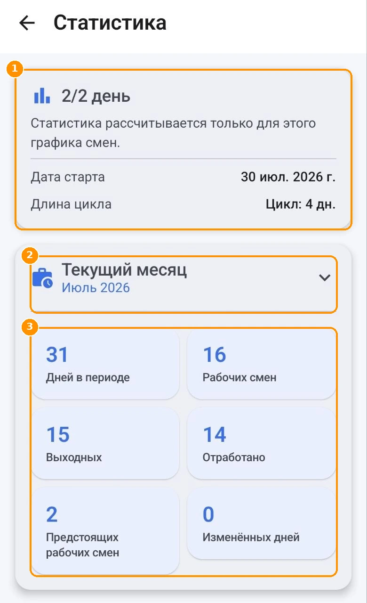
- Informações da escala — mostram o nome da escala selecionada, a data inicial do primeiro ciclo e a duração do ciclo repetitivo. As estatísticas desta tela se aplicam somente a esta escala.
- Cartão do período selecionado — mostra o período em uso. Toque nele ou na seta à direita para selecionar o mês atual, anterior ou seguinte, o ano atual ou um intervalo de datas personalizado.
- Resumo dos dias — mostra o número de dias no período, turnos de trabalho, folgas, turnos concluídos e futuros, e dias alterados. Dias alterados são exceções ao ciclo base: férias, licença médica, folga compensatória, turno substituído ou transferido, ajuste do tempo de trabalho e outras mudanças.
5.2. Tempo de trabalho, salário e relatórios
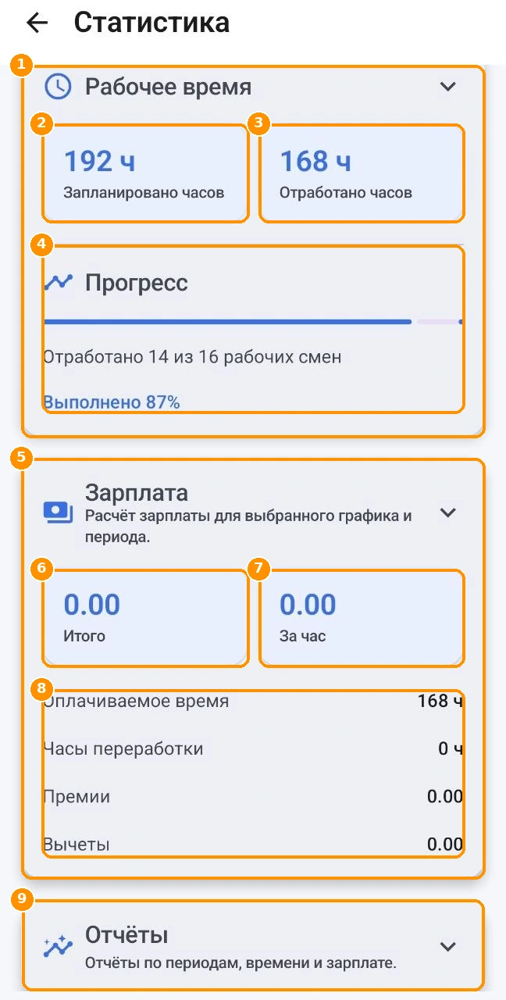
- Tempo de trabalho — é um cartão de resumo das horas e do progresso. Toque nele para abrir as configurações do tempo de intervalo.
- Horas planejadas — duração total dos turnos programados e das alterações durante o período selecionado.
- Horas trabalhadas — tempo dos turnos considerados concluídos até a data atual, com as configurações de intervalo aplicadas.
- Progresso — mostra quantos turnos de trabalho foram concluídos do total e qual porcentagem do período selecionado já foi cumprida.
- Salário — abre as configurações do cálculo do salário. O cartão mostra uma estimativa para a escala e o período selecionados.
- Total — valor estimado ganho até o momento, incluindo o método de pagamento escolhido, bonificações, horas extras e descontos.
- Valor da hora ou salário — o conteúdo deste cartão depende do método de cálculo selecionado: pagamento por hora, por turno ou por mês. Ele mostra o valor inserido nas configurações de salário.
- Detalhes do cálculo — tempo pago, horas extras, bonificações e descontos do período selecionado.
- Relatórios — abre relatórios detalhados de períodos, tempo de trabalho e salário.
5.3. Contabilizar intervalos no tempo de trabalho
Toque no cartão “Tempo de trabalho” para definir se o intervalo para refeição ou outro intervalo deve ser contado como parte do tempo efetivamente trabalhado e pago.
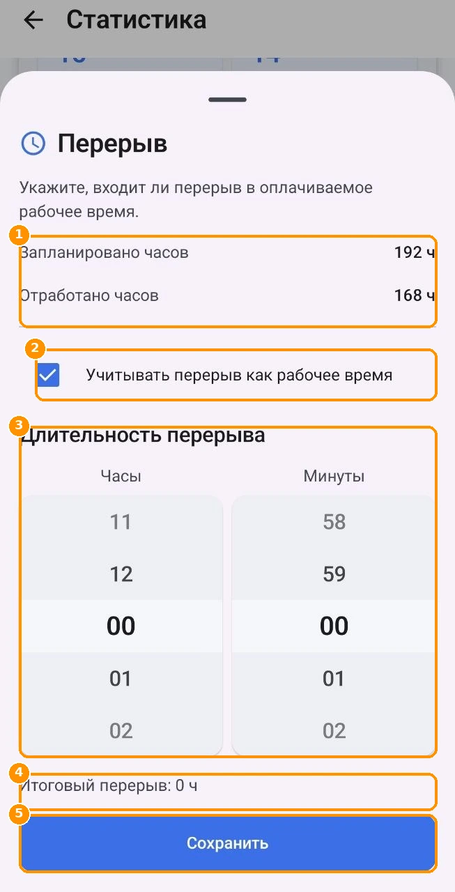
- Totais atuais — mostram as horas planejadas e trabalhadas no período selecionado antes da aplicação das novas configurações.
- Contar o intervalo como tempo de trabalho — mantenha esta opção ativada se o intervalo for pago e estiver incluído na duração do turno. Desative-a se o tempo informado precisar ser excluído do tempo trabalhado e pago.
- Duração do intervalo — selecione as horas e os minutos de um intervalo. Esta configuração é usada ao recalcular os turnos de trabalho correspondentes.
- Intervalo total — mostra a duração selecionada antes de salvar.
- Salvar — aplica a configuração e recalcula o tempo de trabalho e os valores relacionados.
5.4. Relatórios: período, status e resumo
Abra “Relatórios” no cartão inferior da tela de estatísticas. Esta seção oferece informações mais detalhadas sobre o período selecionado: tempo de trabalho, turnos e ausências, ajustes no calendário, salário, bonificações, descontos, comparação de períodos, detalhes por dia e exportação.
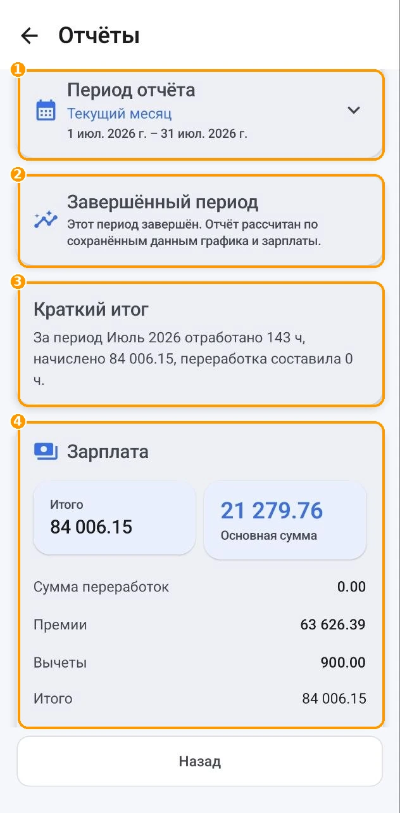
- Período do relatório — toque no cartão para selecionar o mês atual, anterior ou seguinte, um intervalo predefinido ou datas personalizadas. Todas as informações abaixo se aplicam ao período selecionado.
- Status do período — mostra se o período está concluído, ativo no momento ou ainda não começou. Um período concluído é calculado com os dados reais salvos. Um período ativo combina os dados já trabalhados com o plano atual, enquanto um período futuro é uma previsão.
- Resumo — resumo em texto do tempo efetivamente trabalhado, do valor calculado e das horas extras.
- Salário — detalhamento do salário-base, pagamento de horas extras, bonificações, descontos e estimativa final. Os valores dependem das configurações de salário e do período selecionado.
5.5. Tempo de trabalho, ausências e dias
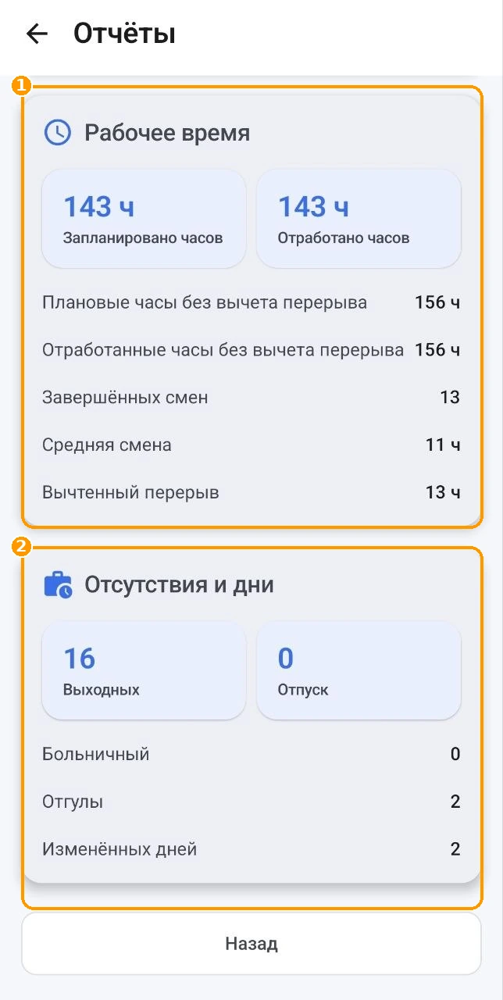
- Tempo de trabalho — mostra as horas planejadas e efetivamente trabalhadas, as horas planejadas e reais antes do desconto dos intervalos, o número de turnos concluídos, a duração média do turno e o total de intervalos descontados. Configure os intervalos na seção de tempo de trabalho.
- Ausências e dias — mostra o número de folgas, dias de férias, dias de licença médica, dias de folga compensatória e dias alterados durante o período selecionado.
5.6. Ajustes e gráficos
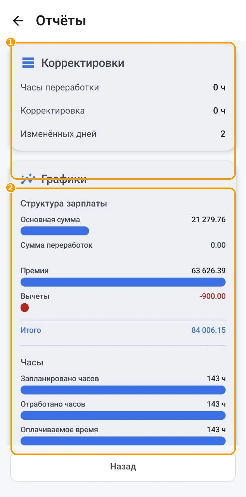
- Ajustes — mostram as horas extras, a alteração total na duração dos turnos e o número de dias modificados em relação à escala base.
- Gráficos — apresentam a composição do salário e do tempo de trabalho: salário-base, horas extras, bonificações, descontos, total e horas planejadas, trabalhadas e pagas.
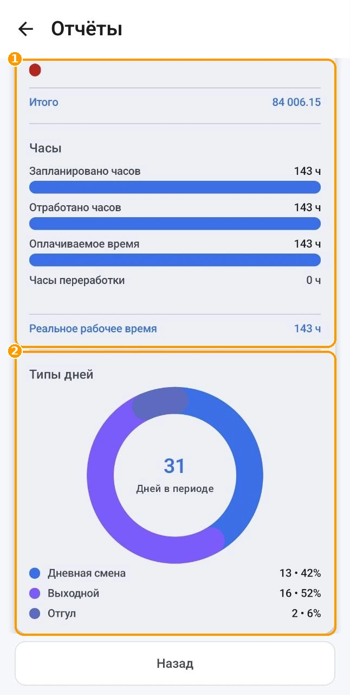
- Horas — continuam a comparação visual das horas planejadas, trabalhadas, pagas e extras. A linha “Tempo de trabalho real” mostra o resultado após a aplicação das configurações e dos ajustes.
- Tipos de dia — gráfico de setores que distribui os dias do período selecionado por tipo. A legenda depende da escala e das alterações reais: turnos diurnos, noturnos ou de outro tipo, folgas, férias, licença médica, folga compensatória e outros estados.
5.7. Comparar períodos
A seção de comparação ajuda a comparar salário, tempo, turnos e ausências entre vários períodos. O número de períodos disponíveis depende dos dados salvos.
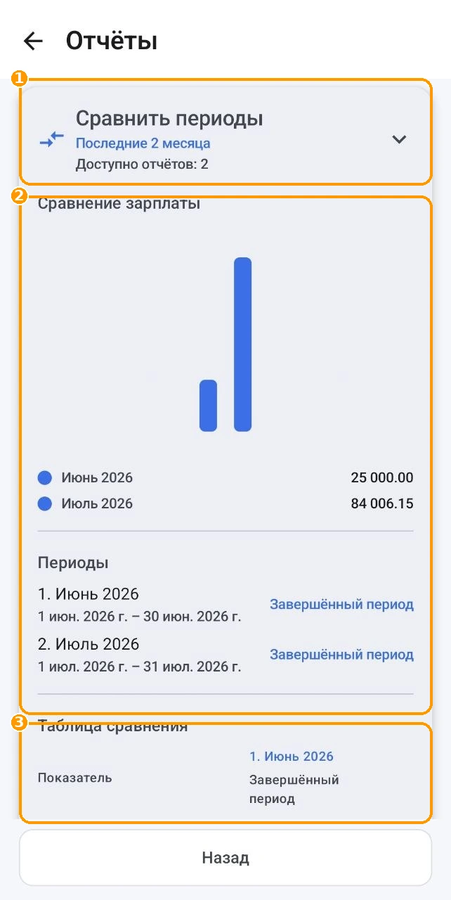
- Comparar períodos — toque no cartão para escolher quantos períodos comparar e qual será o intervalo.
- Gráfico e lista de períodos — mostra o salário de cada período e lista os intervalos incluídos na comparação, junto com seus status.
- Tabela comparativa — contém valores detalhados de cada período. Deslize a tabela horizontalmente para a esquerda ou para a direita para ver as demais colunas.
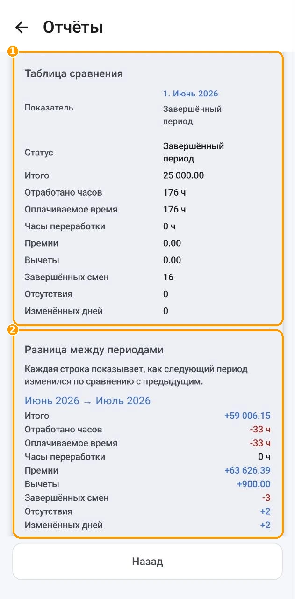
- Valores do período — salário total, horas trabalhadas e pagas, horas extras, bonificações, descontos, turnos concluídos, ausências e dias alterados.
- Diferença entre períodos — mostra como cada período difere do anterior. Valores positivos e negativos indicam aumento ou redução da métrica correspondente. A cor, sozinha, nem sempre indica uma vantagem ou um problema; por exemplo, um aumento nos descontos significa que um valor maior foi retido.
5.8. Detalhes diários e exportação
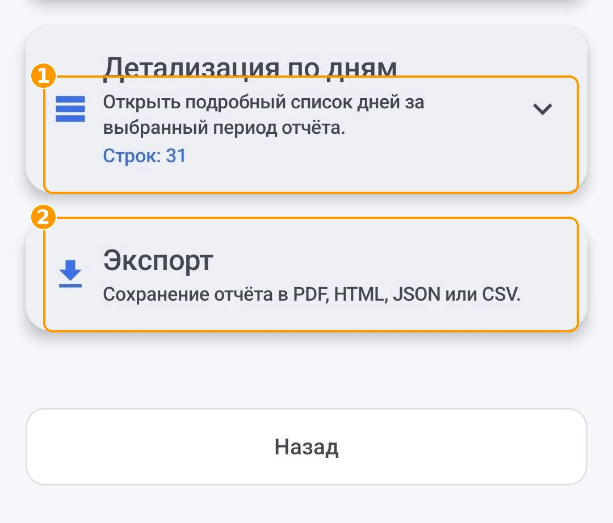
- Detalhes diários — abrem uma lista com todos os dias do período selecionado. Você pode verificar o tipo de turno, o tempo planejado e real, os ajustes de horas, as ausências e outras mudanças de um dia específico.
- Exportar — salva o relatório como PDF, HTML, JSON ou CSV. Selecione o período do relatório antes de exportar; depois, você poderá imprimir, salvar ou compartilhar o arquivo pelo menu do sistema Android.
6. Alarmes
O ShiftAlarm permite criar alarmes únicos, repeti-los em dias selecionados da semana ou vincular o horário deles a uma escala de turnos.
6.1. Lista de alarmes
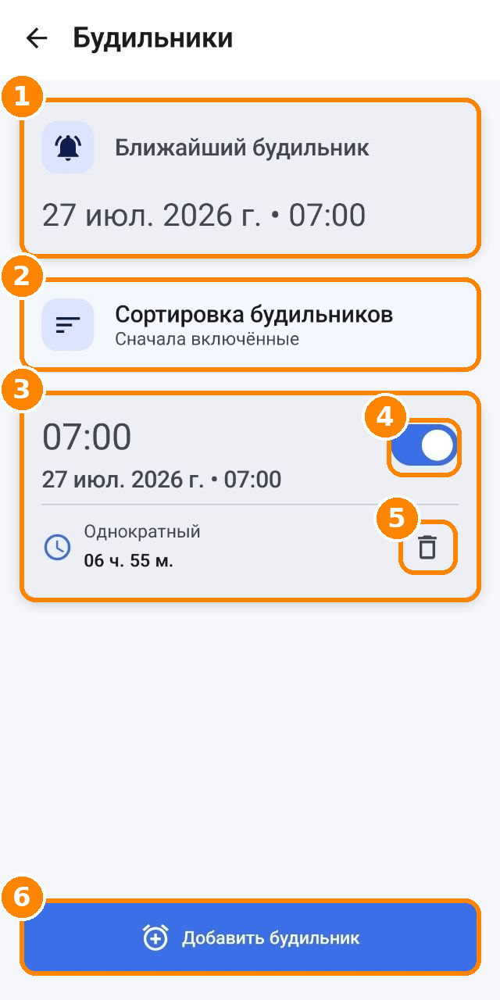
- Próximo alarme — mostra a data e a hora do próximo alerta ativo.
- Ordenação dos alarmes — altera a ordem dos cartões, por exemplo, mostrando primeiro os alarmes ativados.
- Cartão do alarme — contém a hora, a data ou o modo de repetição, o tipo de programação e o tempo restante. Toque no cartão para editá-lo.
- Interruptor — ativa ou desativa temporariamente o alarme sem excluir suas configurações.
- Excluir — exclui o alarme selecionado.
- Adicionar alarme — abre a tela de criação de um novo alarme.
6.2. Criar e editar um alarme
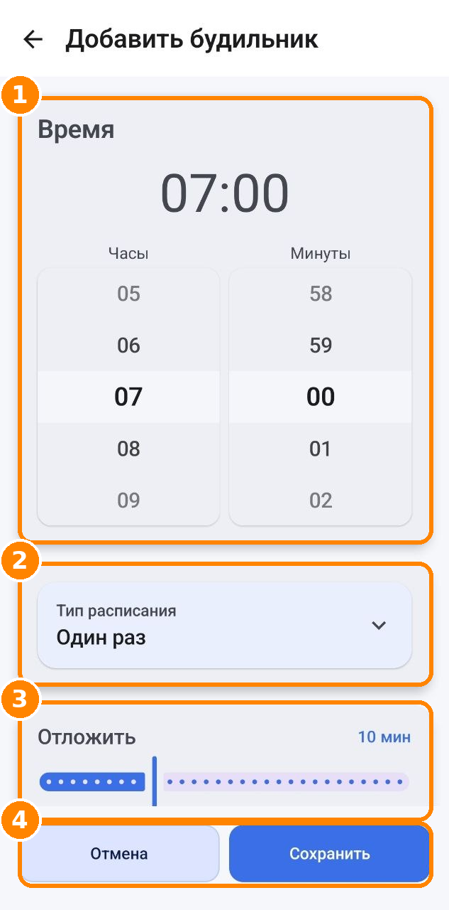
- Hora — role os seletores de horas e minutos para definir o horário do alerta.
- Tipo de programação — selecione um destes modos:
- Uma vez — o alarme toca uma vez na data selecionada;
- Por dias — repete nos dias da semana selecionados;
- Por turnos — vincula o alarme à escala e ao tipo de turno escolhidos.
- Adiar — define por quantos minutos o alerta será adiado quando você tocar no botão de adiamento na tela do alarme.
- Cancelar e Salvar — esses botões ficam fixos na parte inferior da tela e continuam disponíveis enquanto você percorre o editor.
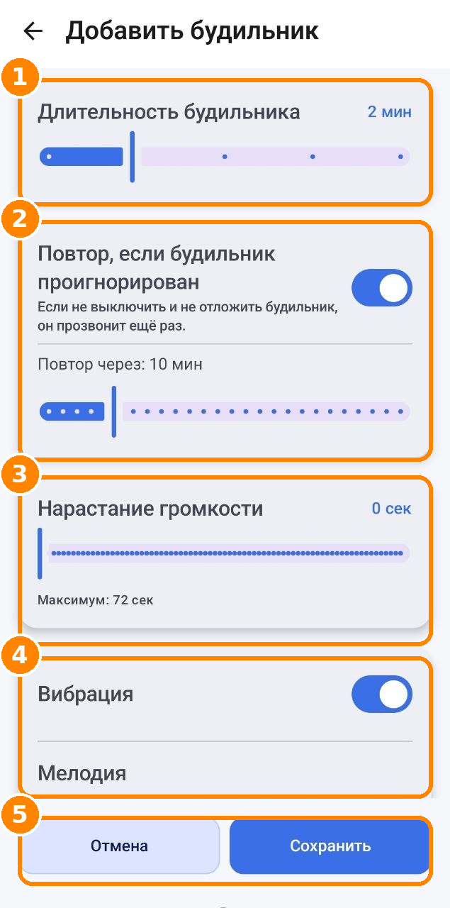
- Duração do alarme — determina por quanto tempo o alerta toca se o usuário não o interromper.
- Repetir se o alarme for ignorado — ativa outro alerta quando o alarme não foi dispensado nem adiado. Defina abaixo o intervalo até a repetição.
- Aumento gradual do volume — começa com um som mais baixo e aumenta o volume gradualmente durante o tempo selecionado.
- Vibração — ativa ou desativa a vibração durante o alerta.
- Cancelar e Salvar — controles fixos do editor.
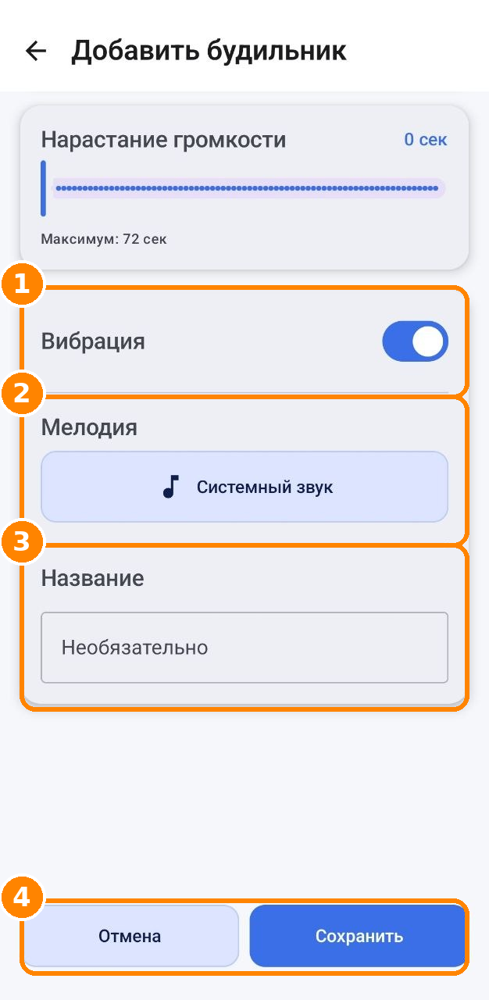
- Vibração — ativa ou desativa o alerta por vibração.
- Som — permite selecionar um som integrado, do sistema ou adicionado pelo usuário. Você pode adicionar até cinco sons personalizados ao aplicativo.
- Nome — rótulo opcional que ajuda a diferenciar os alarmes.
- Cancelar e Salvar — descarta as alterações ou salva o alarme.
7. Geoalarmes
Um geoalarme monitora quando o dispositivo entra em uma área selecionada ou sai dela. A área é definida por um ponto no mapa e por um raio ao redor desse ponto. Por exemplo, use um geoalarme para receber um alerta ao se aproximar do trabalho, de casa, de um ponto de ônibus, de uma estação ou de outro local.
7.1. Mapa e controles
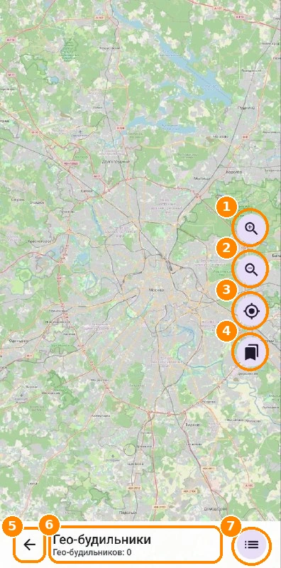
- Aumentar zoom — amplia o mapa.
- Diminuir zoom — reduz a escala do mapa.
- Minha localização — move o mapa para a localização atual do dispositivo. O aplicativo precisa de acesso à localização para usar esta função.
- Locais salvos — abre a lista de geoalarmes e pontos de localização salvos.
- Voltar — retorna à tela anterior do aplicativo.
- Número de geoalarmes — mostra quantos geoalarmes foram criados.
- Lista de geoalarmes — abre uma lista separada dos geoalarmes criados.
7.2. Alarmes e pontos de localização salvos
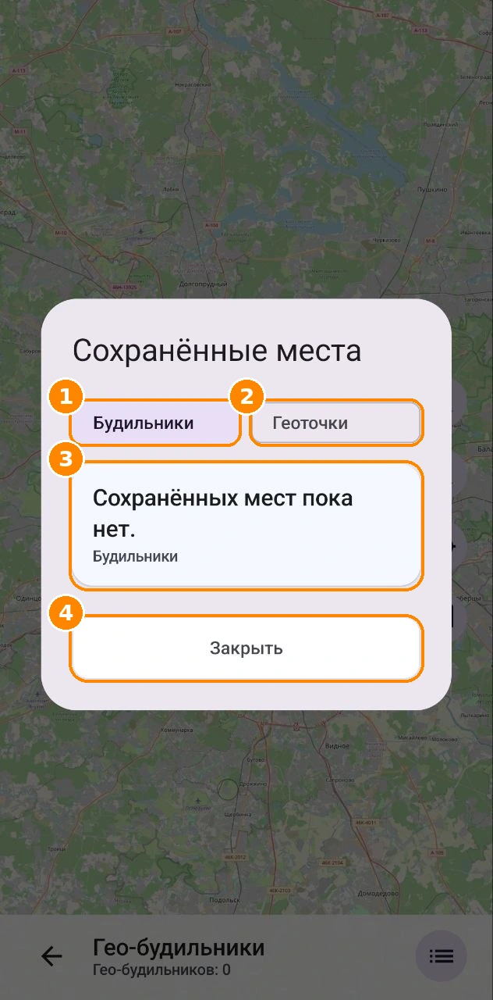
- Alarmes — mostra os geoalarmes adicionados aos locais salvos.
- Pontos de localização — mostra coordenadas salvas sem um geoalarme ativo.
- Lista de locais salvos — toque em um cartão para ir até esse local no mapa.
- Fechar — fecha a janela e retorna ao mapa.
7.3. Selecionar um ponto e um raio
Toque e segure o local desejado no mapa. O aplicativo posiciona um marcador e abre o painel do ponto selecionado.
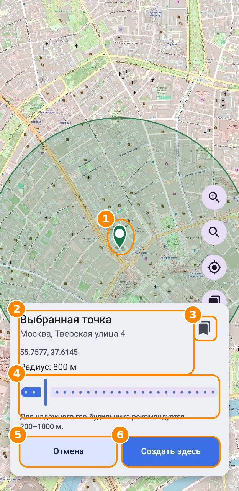
- Marcador do ponto selecionado — é o centro da futura geocerca. O mapa também mostra um círculo para o raio selecionado.
- Endereço e coordenadas — permitem verificar se o local correto foi selecionado.
- Salvar ponto de localização — adiciona as coordenadas selecionadas aos locais salvos sem criar um alarme.
- Raio — define o tamanho da área ao redor do ponto. Mova o controle deslizante até selecionar uma distância adequada.
- Cancelar — cancela a seleção do ponto.
- Criar aqui — abre o editor de um novo geoalarme para o ponto selecionado.
- Na cidade, normalmente é recomendado um raio de 1.300–1.500 m.
- Fora da cidade, onde as atualizações de localização podem ser menos frequentes, recomenda-se 4.000–5.000 m.
- O raio exato deve ser escolhido de acordo com sua rota, velocidade e comportamento do dispositivo.
7.4. Criar um geoalarme
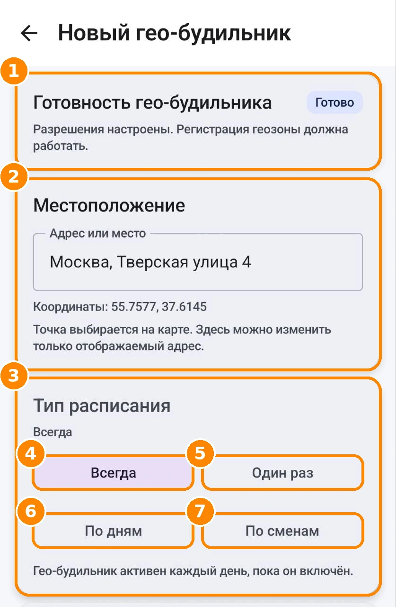
- Disponibilidade do geoalarme — mostra se as permissões necessárias estão configuradas e se o aplicativo pode registrar a geocerca.
- Localização — contém o endereço e as coordenadas selecionados. Você pode editar o endereço como rótulo, mas o ponto real é selecionado no mapa.
- Tipo de programação — determina os dias e as condições em que o geoalarme fica ativo.
- Sempre — o geoalarme fica ativo todos os dias enquanto estiver habilitado.
- Uma vez — é usado no próximo acionamento único quando a condição selecionada for atendida.
- Por dias — funciona somente nos dias da semana selecionados.
- Por turnos — vincula o geoalarme à escala de turnos ativa.
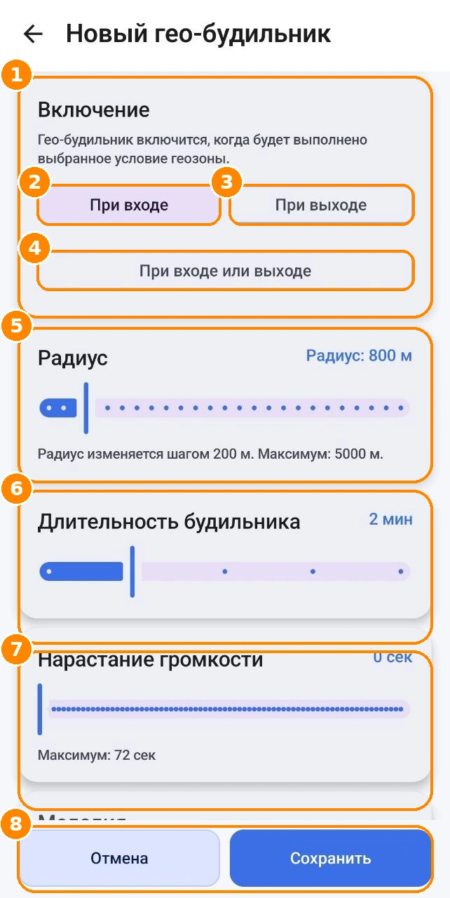
- Condição de acionamento — determina qual cruzamento do limite inicia o alerta.
- Ao entrar — inicia o alerta quando o dispositivo entra no raio selecionado, por exemplo, ao se aproximar do trabalho ou do ponto necessário.
- Ao sair — inicia o alerta quando o dispositivo sai do raio selecionado, por exemplo, depois de sair do trabalho ou de uma estação, para que você não perca a próxima parte do trajeto.
- Ao entrar ou sair — inicia o alerta sempre que o limite é cruzado em qualquer direção.
- Raio — é o tamanho da geocerca ao redor do ponto selecionado.
- Duração do alarme — determina por quanto tempo o alerta toca.
- Aumento gradual do volume — configura um aumento suave do volume após o início do alerta.
- Cancelar e Salvar — descarta as alterações ou salva o geoalarme.
7.5. Um geoalarme no mapa e seus controles
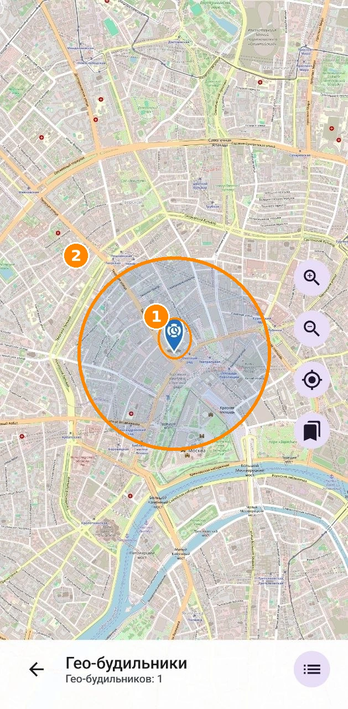
- Marcador do geoalarme — mostra o ponto selecionado.
- Limite do raio — mostra a área cuja entrada ou saída é monitorada pelo aplicativo.
Toque no marcador do geoalarme. Primeiro, aparece uma pequena janela informativa. Toque nessa janela para abrir o cartão detalhado.
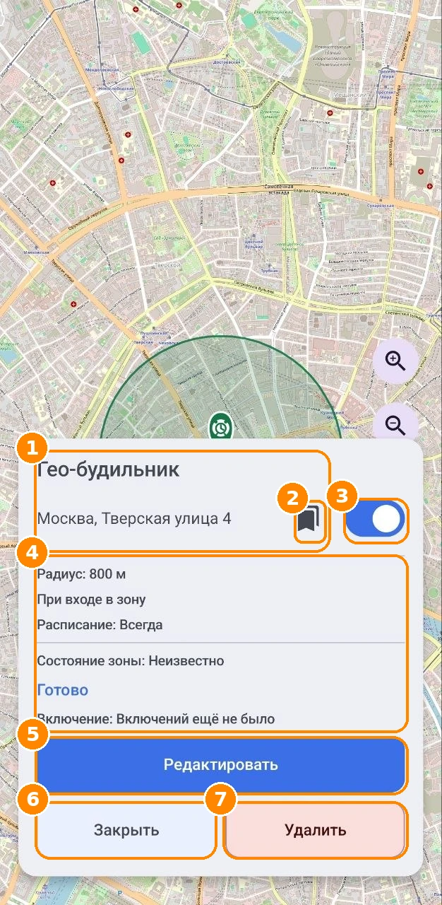
- Nome e endereço — identificam o geoalarme selecionado.
- Favorito — adiciona o alarme aos locais salvos ou o remove deles.
- Interruptor — ativa ou desativa temporariamente o geoalarme sem excluir suas configurações.
- Configurações e status — mostram o raio, a condição de entrada ou saída, a programação, a disponibilidade da geocerca e informações sobre acionamentos anteriores.
- Editar — abre as configurações do geoalarme.
- Fechar — fecha o cartão e retorna ao mapa.
- Excluir — exclui o geoalarme após a confirmação.
8. Notas, eventos e lembretes
A seção “Notas” armazena texto simples, listas, listas de verificação, gravações de áudio, notas criadas por fala, lembretes e eventos.
8.1. Adicionar uma nota
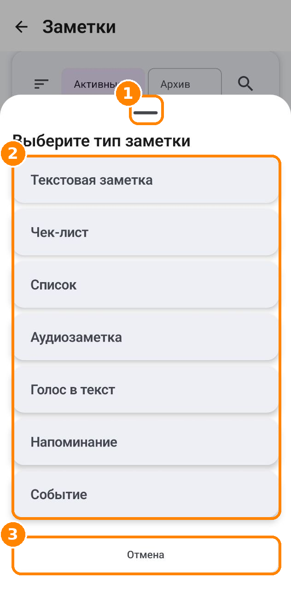
- Alça do painel — arraste-a para cima para mostrar a lista completa de tipos de nota ou para baixo para fechar o painel.
- Tipo de nota — selecione a opção adequada:
- Nota de texto — texto simples;
- Lista de verificação — lista de itens com caixas para marcar a conclusão;
- Lista — lista com marcadores ou numerada;
- Nota de áudio — gravação de voz;
- Fala para texto — cria uma nota usando reconhecimento de voz;
- Lembrete — entrada com uma notificação em um horário definido;
- Evento — entrada vinculada a uma data e hora.
- Cancelar — fecha o seletor sem criar uma nota.
8.2. Lista de notas e controles
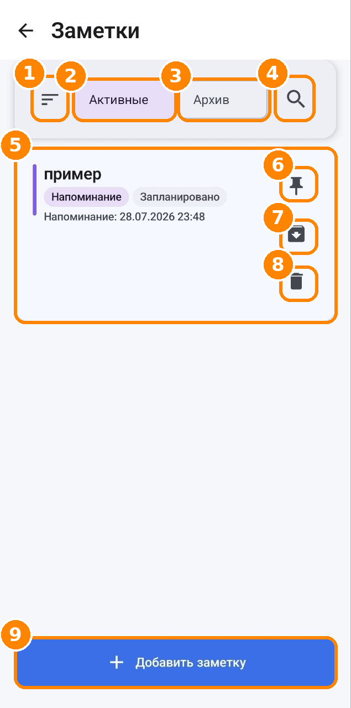
- Ordenar — altera a ordem das notas na lista.
- Ativas — mostra notas comuns e programadas que não foram movidas para o arquivo.
- Arquivo — abre a lista de notas arquivadas.
- Pesquisar — encontra correspondências nos títulos e no conteúdo das notas.
- Cartão da nota — mostra o título, o tipo, o status e informações adicionais. Toque no cartão para abrir a nota.
- Fixar — fixa a nota no início da lista.
- Arquivar — remove a nota da lista ativa e a move para o arquivo.
- Excluir — exclui a nota após a confirmação.
- Adicionar nota — abre o seletor de tipo de uma nova nota.
9. Relógio, cronômetro e temporizador
Esta seção reúne a hora local e mundial, um cronômetro e um temporizador. Abra-a com o botão “Relógio” na tela principal.
9.1. Relógio e relógio mundial
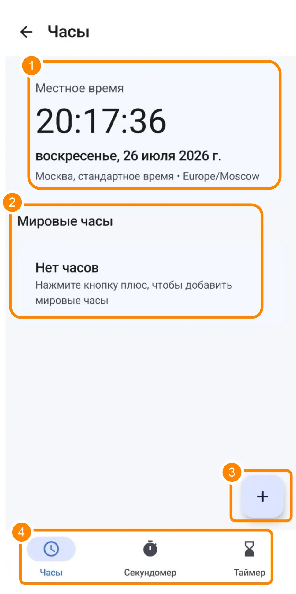
- Hora local — mostra a hora e a data atuais e o fuso horário do sistema do dispositivo.
- Relógios mundiais — mostram as cidades e os fusos horários adicionados. Enquanto a lista estiver vazia, o aplicativo exibe uma dica.
- Botão de adição — abre o seletor de relógios mundiais.
- Abas da seção — alternam entre as telas “Relógio”, “Cronômetro” e “Temporizador”.
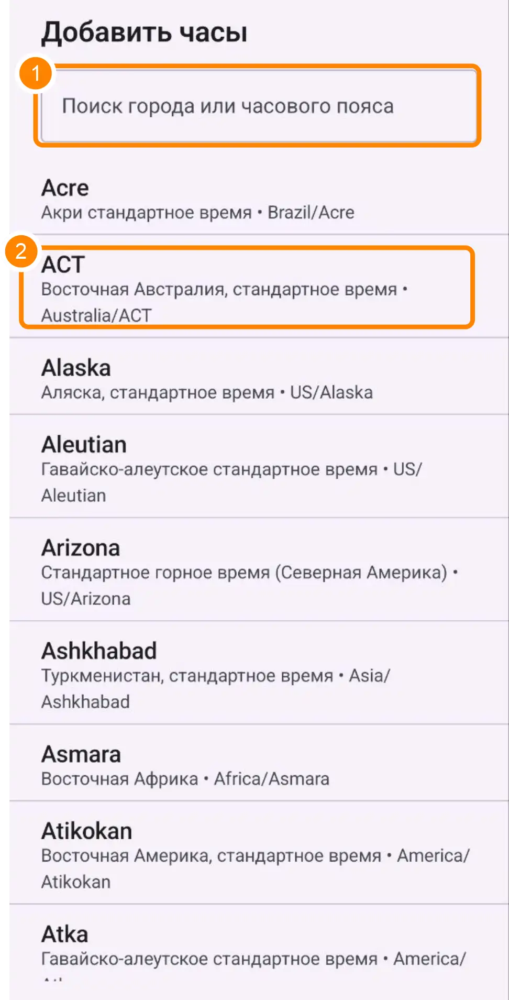
- Pesquisar — informe o nome de uma cidade ou de um fuso horário para filtrar a lista.
- Lista de cidades e fusos horários — toque na opção desejada para adicioná-la à tela de relógios mundiais.
9.2. Cronômetro
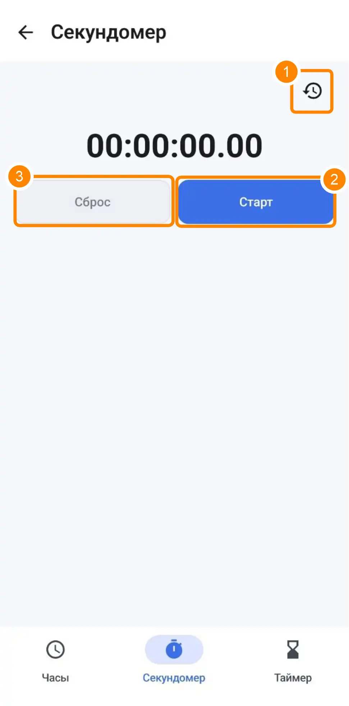
- Histórico — abre as sessões salvas do cronômetro.
- Iniciar — inicia a contagem do tempo.
- Redefinir — não está disponível antes de o cronômetro ser iniciado. Depois da parada, retorna o cronômetro a zero e remove as voltas atuais.
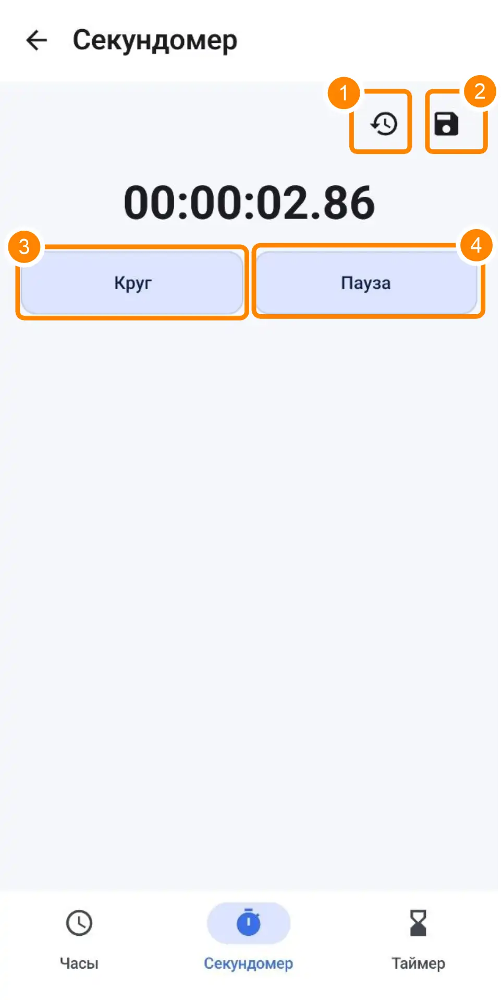
- Histórico — mostra as sessões salvas anteriormente.
- Salvar — solicita um nome e salva a sessão atual do cronômetro.
- Volta — registra um resultado intermediário sem interromper o tempo total.
- Pausar — pausa o cronômetro. Depois, você pode retomar ou redefini-lo.
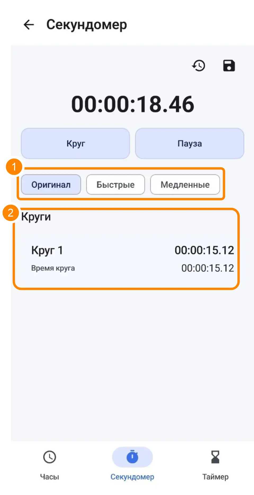
- Original, mais rápida e mais lenta — alteram a ordem de exibição das voltas: ordem original, mais rápidas primeiro ou mais lentas primeiro.
- Voltas — cada volta mostra o tempo total em que foi registrada e o tempo individual da volta.
9.3. Temporizador
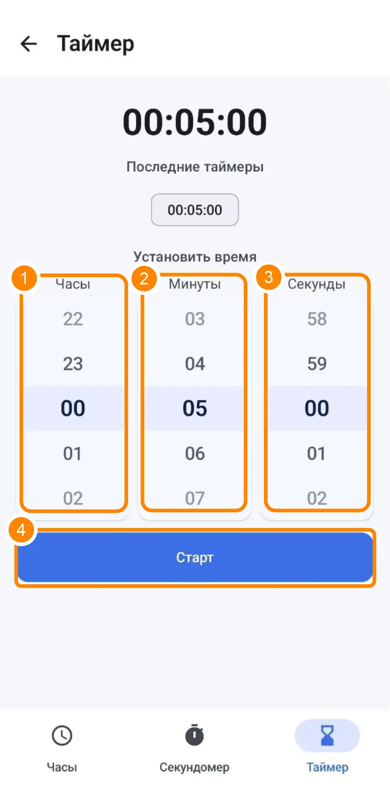
- Horas — role o seletor e escolha o número de horas.
- Minutos — role o seletor e escolha o número de minutos.
- Segundos — role o seletor e escolha o número de segundos.
- Iniciar — inicia o temporizador com a duração selecionada.
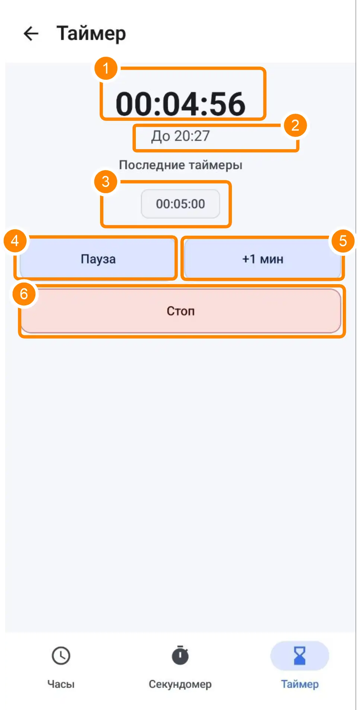
- Tempo restante — mostra quanto tempo falta para o alerta.
- Hora de término — mostra o horário aproximado em que o temporizador terminará.
- Temporizadores recentes — durações recentes salvas; toque em uma delas para reutilizá-la rapidamente.
- Pausar — interrompe temporariamente a contagem regressiva. Depois, você pode retomá-la.
- +1 min — adiciona um minuto ao tempo restante.
- Parar — interrompe completamente o temporizador.
10. Widgets
O ShiftAlarm oferece widgets para a tela inicial do telefone.
- Hoje 4×2 — painel compacto com duas seções configuráveis.
- Hoje 4×3 — painel com um relógio na parte superior e duas seções abaixo.
- Calendário 4×4 — widgets de calendário com a escala de turnos.
Adicione um widget pelo menu de widgets do Android na tela inicial do telefone.
11. Cálculo do salário
Abra “Cálculo do salário” no cartão de salário das estatísticas da escala selecionada. Aqui você pode definir o método de pagamento, o valor da hora ou o salário mensal, as regras de horas extras, as bonificações e os descontos. O aplicativo usa essas configurações junto com o período selecionado, a escala de turnos, as alterações do calendário e a contabilização de intervalos.
11.1. Valor, horas extras e bonificações
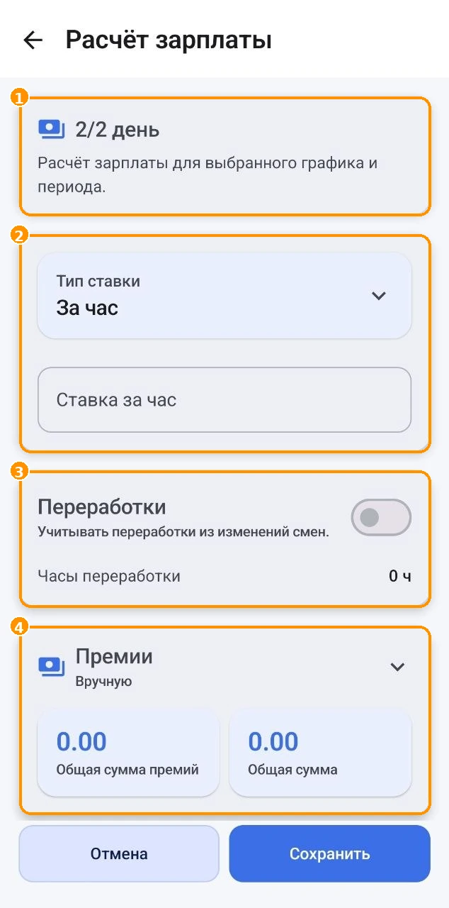
- Escala selecionada — mostra qual escala de turnos está sendo usada. O salário é calculado com base nessa escala e no período selecionado nas estatísticas.
- Tipo de valor e quantia do pagamento — selecione o pagamento por hora, por turno ou por mês e informe o valor correspondente. O nome do campo muda de acordo com o tipo selecionado.
- Horas extras — ative esta seção se as horas adicionais forem pagas de forma diferente do tempo de trabalho normal. Depois, informe o multiplicador do pagamento de horas extras. Adicione horas ao calendário em “Alterar turno” → “+ tempo”; ative “Contar este tempo como hora extra” para que as horas sejam tratadas dessa forma.
- Bonificações — mostram o método de cálculo atual e os totais. Toque no cartão para abrir as configurações de bonificações.
11.2. Descontos e total do cálculo
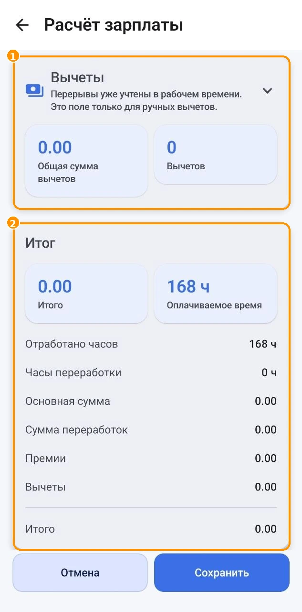
- Descontos — mostram o valor total e o número de descontos configurados. Toque no cartão para abrir a lista de descontos.
- Total — detalhamento resumido: tempo pago, horas trabalhadas, horas extras, salário-base, pagamento de horas extras, bonificações, descontos e resultado final.
11.3. Bonificações
Toque no cartão “Bonificações” na tela de cálculo do salário. Você pode inserir uma bonificação manualmente ou calculá-la como porcentagem, se esse método corresponder ao seu sistema de pagamento.
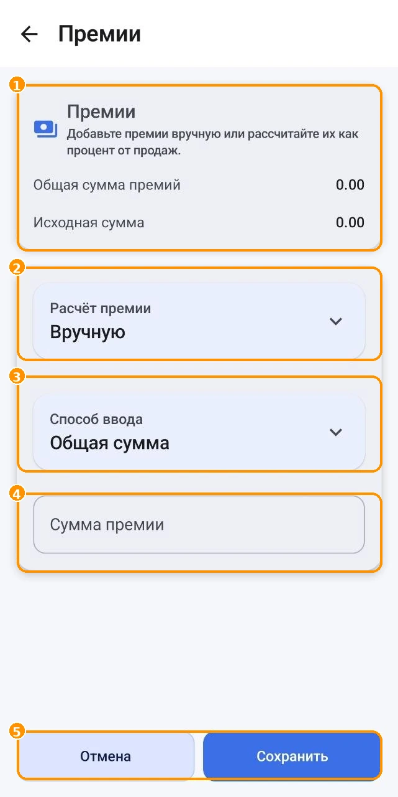
- Informações resumidas — mostram o total calculado das bonificações e o valor-base usado no cálculo.
- Cálculo da bonificação — selecione a inserção manual ou um cálculo percentual, como uma porcentagem das vendas, se esse método for usado no seu local de trabalho.
- Método de inserção — “Valor total” é adequado para uma única bonificação final. Linhas separadas são úteis quando existem várias bonificações que precisam ser contadas de forma independente.
- Valor ou porcentagem — informe o valor exigido pelo método de cálculo selecionado.
- Cancelar e Salvar — descarta as alterações ou as aplica ao cálculo do salário.
11.4. Lista de descontos
Toque no cartão “Descontos” na tela principal de cálculo. Esta seção permite armazenar vários descontos e administrar cada um separadamente.
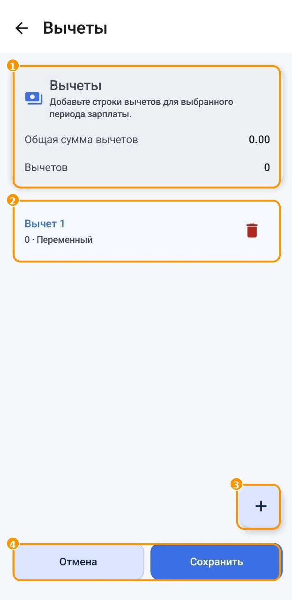
- Informações resumidas — mostram o valor e o número de todos os descontos ativados.
- Linha de desconto — mostra o nome, o valor e o tipo. Toque na linha para abrir as configurações do desconto. O ícone de lixeira exclui a linha.
- Adicionar desconto — o botão “+” cria uma nova linha de desconto.
- Cancelar e Salvar — descarta as alterações ou salva a lista inteira.
11.5. Configurar um desconto individual
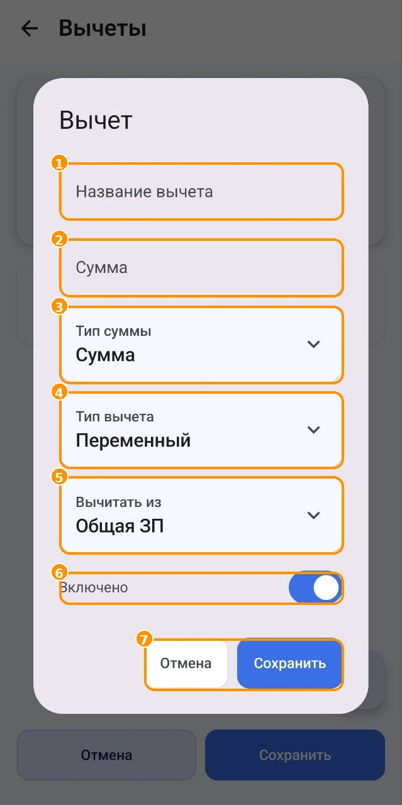
- Nome do desconto — insira um nome claro, como “Imposto”, “Pensão alimentícia” ou “Multa”.
- Valor — informe um valor ou uma porcentagem, de acordo com o tipo selecionado abaixo.
- Tipo de valor — selecione um valor fixo ou uma porcentagem.
- Tipo de desconto — um desconto variável se aplica a um período de cálculo específico; um desconto recorrente é aplicado regularmente enquanto permanecer ativado.
- Descontar de — selecione a base de cálculo: salário total, salário-base, bonificações ou outra opção disponível.
- Ativado — permite desativar temporariamente o desconto sem excluir suas configurações.
- Cancelar e Salvar — fecha o painel sem alterações ou salva o desconto.
12. Configurações
Abra “Configurações” com o botão na parte inferior da tela principal. Esta seção contém permissões do sistema, aparência e idioma do aplicativo, reconhecimento de voz offline, documentos e guia do usuário, backup, diagnóstico e opções de contato com os desenvolvedores.
12.1. Principais seções das configurações
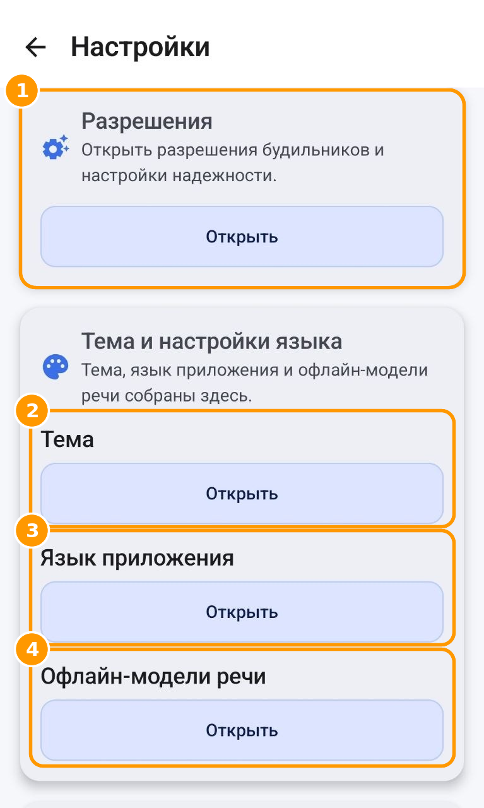
- Permissões — abre as configurações de permissões e confiabilidade dos alarmes. Verifique notificações, alarmes exatos, atividade em segundo plano e restrições de bateria. Os geoalarmes também exigem acesso à localização; o acesso em segundo plano ou a opção “Permitir o tempo todo” é necessário para o acionamento com o aplicativo fechado. Os nomes e caminhos dos itens variam de acordo com a versão do Android e o fabricante do dispositivo.
- Tema — permite selecionar a aparência clara, escura ou do sistema, escolher uma variante de cor da interface e ativar ou desativar a resposta tátil para ações no aplicativo. O tema do sistema acompanha a aparência atual do telefone.
- Idioma do aplicativo — permite usar um idioma diferente do idioma do sistema do telefone. O catálogo do ShiftAlarm contém 108 idiomas: encontre o idioma desejado pela pesquisa, baixe o pacote de idioma e aplique-o.
- Modelos de voz offline — instala um módulo para notas de fala para texto. O reconhecimento offline está em fase de testes e disponível para aproximadamente 20 idiomas. A qualidade pode ser inferior à do reconhecimento online e depende do idioma, microfone, desempenho do telefone e condições de gravação.
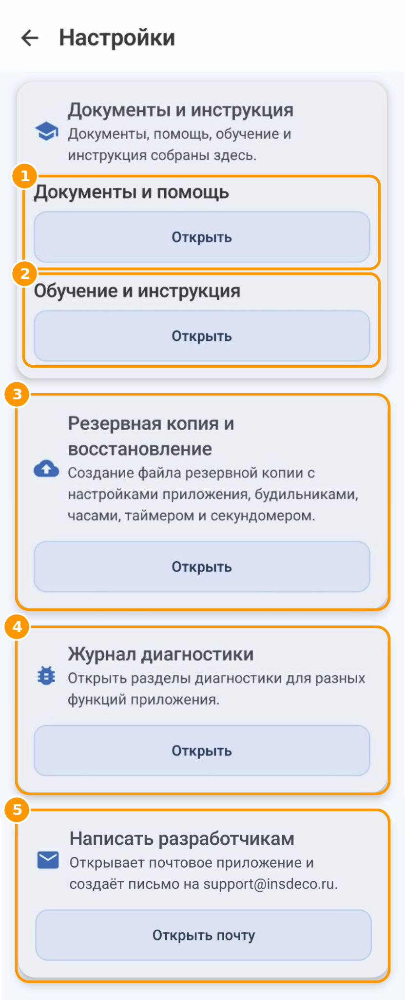
- Documentos e ajuda — abre os documentos legais do aplicativo: Termos de Uso, Política de Privacidade, Isenção de Responsabilidade e a página de ajuda resumida.
- Treinamento e guia do usuário — abre este guia ilustrado completo, com descrições detalhadas dos recursos do ShiftAlarm.
- Backup e restauração — cria um arquivo com configurações e dados compatíveis do aplicativo ou os restaura de um backup anterior. Isso é útil antes de reinstalar o aplicativo, redefinir o telefone ou transferir dados para outro dispositivo. Consulte “Backup e restauração” para ver instruções detalhadas.
- Registro de diagnóstico — abre registros separados para os recursos do aplicativo. Eles registram etapas técnicas, como agendamento e recuperação de alertas, processamento de eventos, estado das permissões e outras informações de serviço. Um registro ajuda a identificar a etapa em que ocorreu um erro. Você pode copiar entradas ou prepará-las para enviar por e-mail aos desenvolvedores. Consulte “Diagnóstico e solução de problemas” para obter detalhes.
- Entrar em contato com os desenvolvedores — abre o aplicativo de e-mail e cria uma mensagem endereçada ao suporte. Use-a para relatar um problema, enviar comentários ou sugestões ou fazer uma pergunta. Em um problema técnico, inclua o modelo do telefone, a versão do Android, o horário do problema, as etapas realizadas e, se possível, o registro de diagnóstico correspondente.
13. Backup e restauração
Um backup salva as configurações compatíveis do ShiftAlarm e os dados do usuário em um arquivo separado. Ele ajuda a restaurar os dados após reinstalar o aplicativo, redefinir o telefone ou mudar para outro dispositivo.
- Abra “Configurações → Backup e restauração”.
- Crie um backup e salve o arquivo resultante no telefone ou compartilhe-o pelo menu do sistema.
- Para restaurar, abra a mesma seção e selecione um arquivo de backup criado anteriormente.
- Após a restauração, verifique os alarmes importantes, as escalas e as permissões do Android. Talvez seja necessário conceder novamente algumas permissões de segurança do sistema em um novo dispositivo ou após a reinstalação.
Mantenha uma cópia atualizada em um local seguro que permaneça acessível se o telefone for perdido, danificado ou redefinido. Um arquivo de backup não substitui as permissões do sistema Android e não pode incluir automaticamente dados que o aplicativo não tem permissão para acessar.
14. Diagnóstico e solução de problemas
O ShiftAlarm oferece registros de diagnóstico separados para diferentes recursos. Eles preservam uma sequência de eventos técnicos e ajudam a determinar se um alerta foi programado, restaurado após uma reinicialização, enviado para processamento ou interrompido por uma configuração do sistema.
14.1. Controlar a coleta de diagnósticos
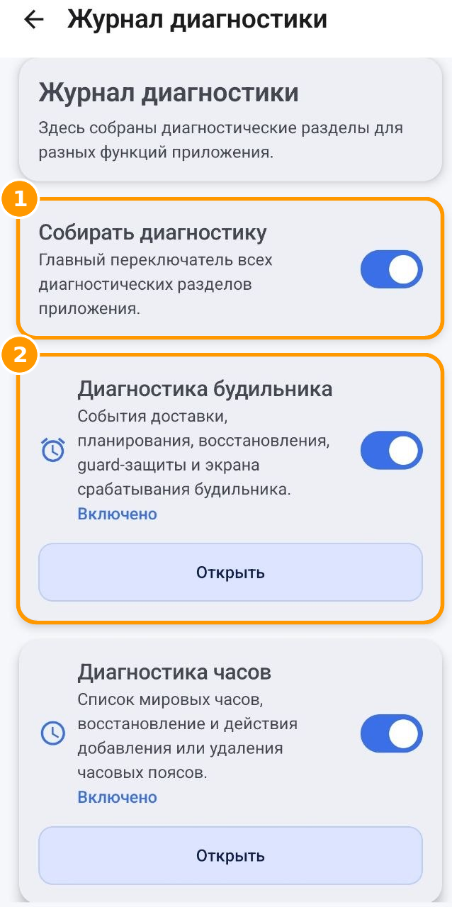
- Coletar diagnósticos — é o interruptor principal de todas as seções de diagnóstico do aplicativo. Desative-o para parar de adicionar novos eventos a todos os registros de uma só vez. A coleta de novos eventos é retomada quando você o ativa novamente.
- Registro de um recurso — cada módulo tem seu próprio interruptor e botão “Abrir”. Por exemplo, você pode manter o diagnóstico global ativado e desativar somente o registro de alarmes, do relógio ou de outro recurso. A captura de tela mostra o registro de alarmes, que armazena eventos de entrega, agendamento, recuperação, proteção contra duplicidade e tela do alarme.
14.2. Registro de um recurso
Toque em “Abrir” na seção de diagnóstico desejada. O exemplo abaixo mostra o registro de alarmes; os registros de outros recursos funcionam de maneira semelhante.
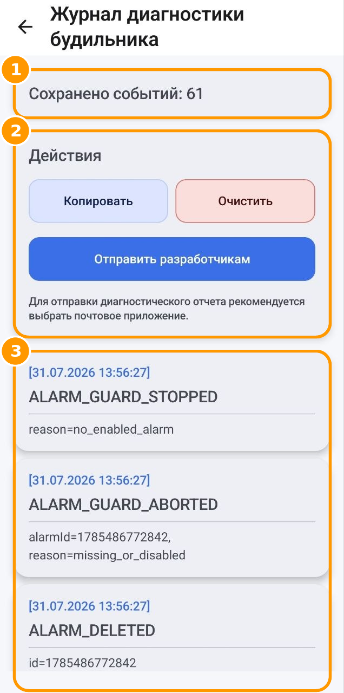
- Eventos salvos — mostra o número de entradas armazenadas atualmente no registro selecionado.
- Ações do registro:
- Copiar — copia todos os dados do registro atual para a área de transferência. Você pode colá-los em um e-mail ou em outro aplicativo.
- Limpar — exclui as entradas salvas neste registro. Após a limpeza, somente os eventos registrados posteriormente, enquanto o diagnóstico estiver ativado, aparecerão.
- Enviar aos desenvolvedores — abre o seletor de aplicativos para enviar um e-mail. Escolha um aplicativo de e-mail; o endereço dos desenvolvedores e os dados de diagnóstico são inseridos automaticamente. Antes de enviar, adicione uma descrição do problema, revise a mensagem e confirme o envio.
- Eventos do aplicativo — são as próprias entradas do registro. Normalmente, uma entrada contém data e hora, nome técnico do evento e parâmetros adicionais, como identificador, estado ou motivo. Os nomes técnicos podem aparecer em inglês; não os edite nem traduza antes de enviar.
15. Perguntas frequentes
O alarme não tocou na hora certa
Verifique as notificações, a permissão de alarmes exatos, a atividade em segundo plano e as restrições de bateria.
O geoalarme tocou com atraso
Verifique a localização precisa e em segundo plano, as restrições de bateria e a inicialização automática do aplicativo. Experimente um raio de 1.300–1.500 m na cidade e de 4.000–5.000 m fora dela. O acionamento real pode não ocorrer exatamente sobre a linha do raio.
O widget não foi atualizado imediatamente
Abra o aplicativo ou toque no botão de atualização do widget. O Android pode limitar atualizações frequentes dos widgets.
Alterei o idioma, mas um documento ou o guia ainda não foi atualizado
Verifique sua conexão com a Internet e aguarde o download. Se a versão remota não estiver disponível, o aplicativo usa a versão alternativa integrada.